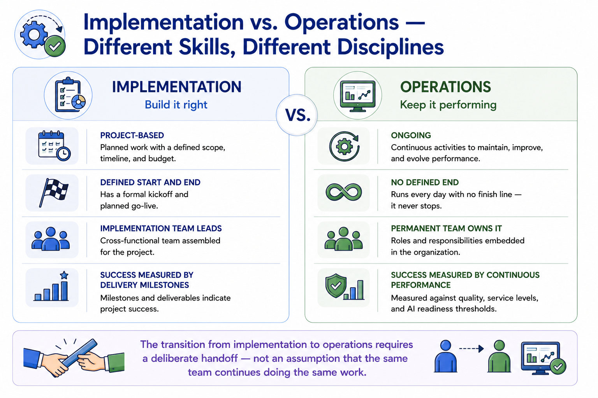
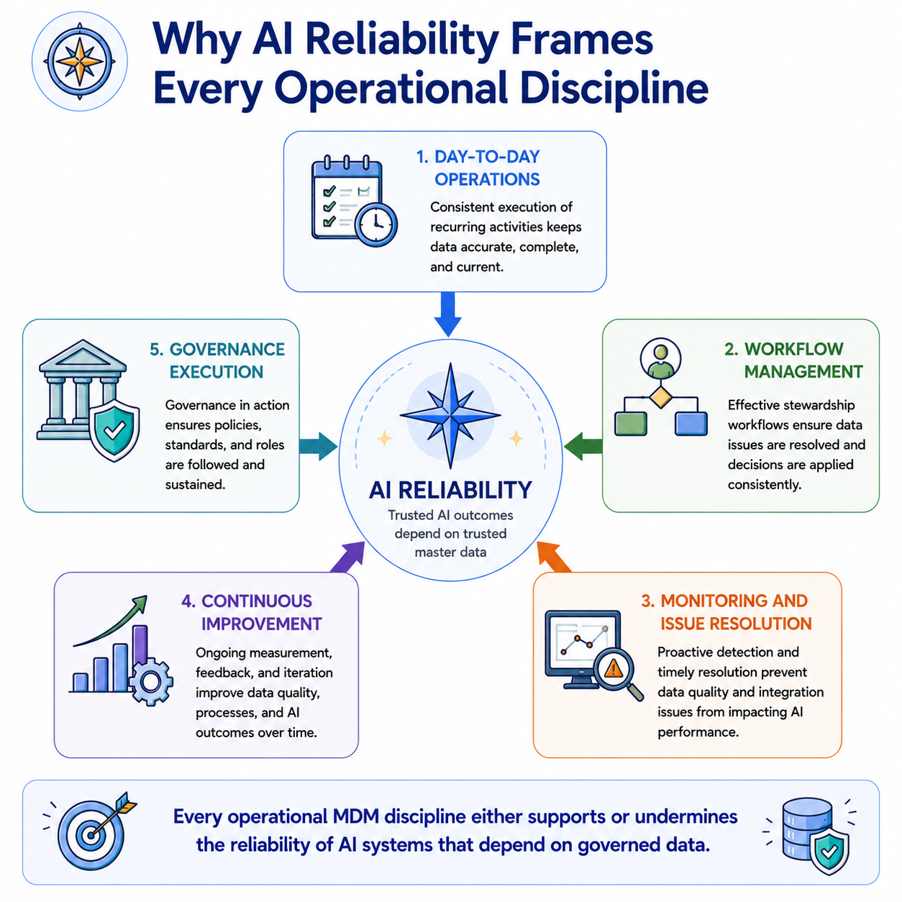

Operating and Managing MDM
Module support notes
The Shift From Implementation to Operations
The transition from implementation to operations is one of the most vulnerable moments in an MDM program's lifecycle. Implementation teams are skilled at building — configuring platforms, migrating data, establishing governance structures, connecting AI pipelines. Operational teams need a different skill set — managing exception queues, sustaining governance cadences, responding to monitoring alerts, and continuously improving quality.
Organizations that plan this transition deliberately — defining when it happens, who is responsible, what the operational team needs to know, and how performance will be measured — navigate it successfully. Those that treat it as an automatic handoff consistently see quality and AI readiness degrade in the months following implementation completion.
Warning
The transition from implementation to operations requires a deliberate handoff — not an assumption that the same team continues doing the same work. Implementation is project-based with a defined end date and success measured by delivery milestones. Operations is ongoing with no defined end and success measured by continuous performance against quality and AI readiness thresholds. Treating them as the same discipline with the same team produces neither well.

AI Reliability as the Operational North Star
AI reliability is the most compelling organizational framing for MDM operational excellence — more compelling than data quality scores, more compelling than governance compliance rates, and more compelling than exception resolution times. When operational disciplines are framed as the practices that keep AI systems trustworthy, they attract the executive attention, the business owner engagement, and the organizational priority that purely technical quality metrics rarely sustain.
Organizations that position their MDM operations program as AI reliability infrastructure consistently report stronger stakeholder support and more sustained operational investment than those that position it as a data management maintenance function.
Note
Every operational MDM discipline either supports or undermines the reliability of AI systems that depend on governed data. Day-to-day operations maintain the golden records AI models reference. Workflow management resolves the exceptions that would otherwise degrade those records. Monitoring detects the quality drift that erodes AI model performance. Continuous improvement raises the quality floor that AI systems depend on. Governance execution ensures accountability for all of the above.

Module 9 covers the five operational disciplines that keep MDM performing as permanent infrastructure — for the business and for every AI system that depends on it.
![A five-stage flow showing the Module 9 operational landscape: Day-to-Day Operations — the recurring activities; Workflow Management — the processes that handle exceptions and decisions; Monitoring and Issue Resolution — the practices that detect and fix problems; Continuous Improvement — the discipline that makes the program better over time; Governance Execution — how governance frameworks run in practice. A banner beneath reads: Every operational discipline has a direct consequence for AI system reliability.](../assets/m9-module-overview.png)